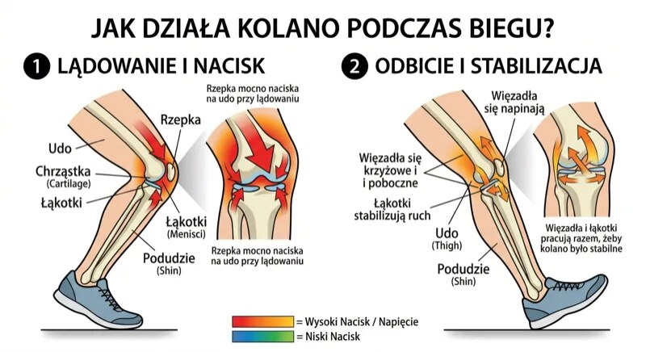
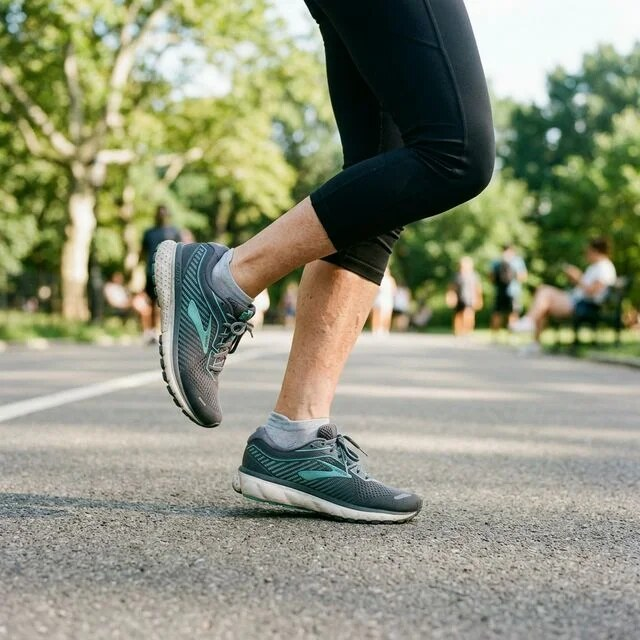

Szybka odpowiedź
Dostępne przeglądy nie pokazują, aby rekreacyjne bieganie samo w sobie częściej powodowało chorobę zwyrodnieniową kolan. Metaanaliza 125 810 osób wykazała niższą częstość choroby u biegaczy rekreacyjnych niż u zawodowych i osób niebiegających, ale nie dowodzi przyczynowości. Ryzyko zmieniają wcześniejsze urazy, duża objętość, masa ciała, objawy i zbyt szybka progresja.
Kluczowe wnioski
- Rekreacyjne bieganie i bieganie wyczynowe nie są tą samą ekspozycją dla stawu.
- Niższa częstość choroby u amatorów jest obserwacją; może częściowo wynikać z różnic zdrowia i dawnych urazów.
- Ból podczas biegu nie oznacza automatycznie „zużycia chrząstki”, ale wymaga oceny wzorca i reakcji po wysiłku.
- Powrót powinien zwiększać jeden parametr naraz: czas, częstotliwość albo tempo.
Co badania mówią o bieganiu i chorobie zwyrodnieniowej kolan?
Metaanaliza 25 badań obejmująca 125 810 osób wykazała chorobę biodra lub kolana u 3,5% biegaczy rekreacyjnych, 13,3% zawodowych i 10,2% osób kontrolnych. Autorzy podkreślili, że dane obserwacyjne nie pozwalają dowieść, iż bieganie było przyczyną różnic, a wcześniejsze urazy mogły zaburzać wynik.
To ważniejsze rozróżnienie niż hasło „bieganie niszczy”; bezpieczny powrót opisuje plan startu od zera.

Dlaczego kolano może boleć mimo braku uszkodzenia?
Ból zależy nie tylko od obrazu chrząstki, lecz także od obciążenia, tolerancji tkanek, siły, snu, stresu i wcześniejszych doświadczeń. Nowy ból po skoku objętości często oznacza, że dawka przekroczyła bieżącą tolerancję. Nie wolno jednak na odległość wykluczać urazu, zapalenia ani innej przyczyny.
Siłę biodra i nogi można budować według zasad z Centrum Treningu Siłowego.
Jak wrócić do biegania po 50-tce?
Zacznij od marszobiegu co drugi dzień: po rozgrzewce przeplataj 1 minutę spokojnego biegu z 2 minutami marszu przez 18-24 minuty. Utrzymaj tempo pozwalające mówić zdaniami. Jeśli reakcja w trakcie i następnego dnia jest stabilna, w kolejnym tygodniu wydłuż tylko odcinki biegu lub cały czas.
Gdy ciągły bieg jest za trudny, przygotowanie tlenowe daje nordic walking po 50-tce.

Kiedy ból kolana wymaga badania zamiast kolejnego treningu?
Pilnej oceny wymaga uraz z deformacją, niemożność obciążenia nogi, gwałtowny duży obrzęk, gorący zaczerwieniony staw z gorączką albo zablokowanie kolana. Konsultacji wymaga też ból narastający mimo zmniejszenia dawki, nawracająca niestabilność lub obrzęk po każdym biegu. Nie testuj wtedy kolejnych kilometrów.
Jeśli chcesz pozostać aktywny bez prowokowania objawów, dobierz zastępczy ruch z poradnika o różnorodności treningu.
| Sytuacja | Co zrobić? | Czego nie robić? |
|---|---|---|
| Lekka sztywność bez narastania | Powtórzyć lub zmniejszyć dawkę | Dokładać tempa i czasu naraz |
| Ból rośnie następnego dnia | Cofnąć ostatnią progresję | Biec „żeby rozchodzić” |
| Nawracający obrzęk lub niestabilność | Umówić ocenę kliniczną | Testować długi bieg |
| Deformacja, gorący staw, brak obciążenia | Pilna pomoc | Czekać na plan treningowy |
Kolano nie liczy urodzin ani haseł o bieganiu — reaguje na dawkę, historię urazów i aktualną zdolność do obciążenia.
Najczęściej zadawane pytania
Czy bieganie po asfalcie niszczy kolana?
Sama nawierzchnia nie przesądza o uszkodzeniu. Znaczenie mają dawka, prędkość, obuwie, urazy i tolerancja danej osoby.
Czy można biegać z chorobą zwyrodnieniową?
Część osób może, ale plan zależy od objawów, funkcji i zaleceń prowadzącego; nie ma jednej odpowiedzi dla wszystkich.
Ile razy w tygodniu biegać na początku?
Praktycznym startem są 2-3 marszobiegi z dniem przerwy, jeśli objawy podczas wysiłku i następnego dnia pozostają stabilne.
Czy ból oznacza ścieranie chrząstki?
Nie automatycznie. Ból i zmiany strukturalne nie są tym samym, lecz nowy lub narastający objaw wymaga rozsądnej oceny.
Źródła
- Running and hip or knee osteoarthritis - meta-analysis
- Running volume and knee osteoarthritis - meta-analysis
- Running and knee osteoarthritis - updated review
- Physical activity and knee osteoarthritis evidence overview
Uwaga: Artykuł ma charakter informacyjny i edukacyjny. Nie zastępuje konsultacji, diagnozy ani indywidualnego leczenia.